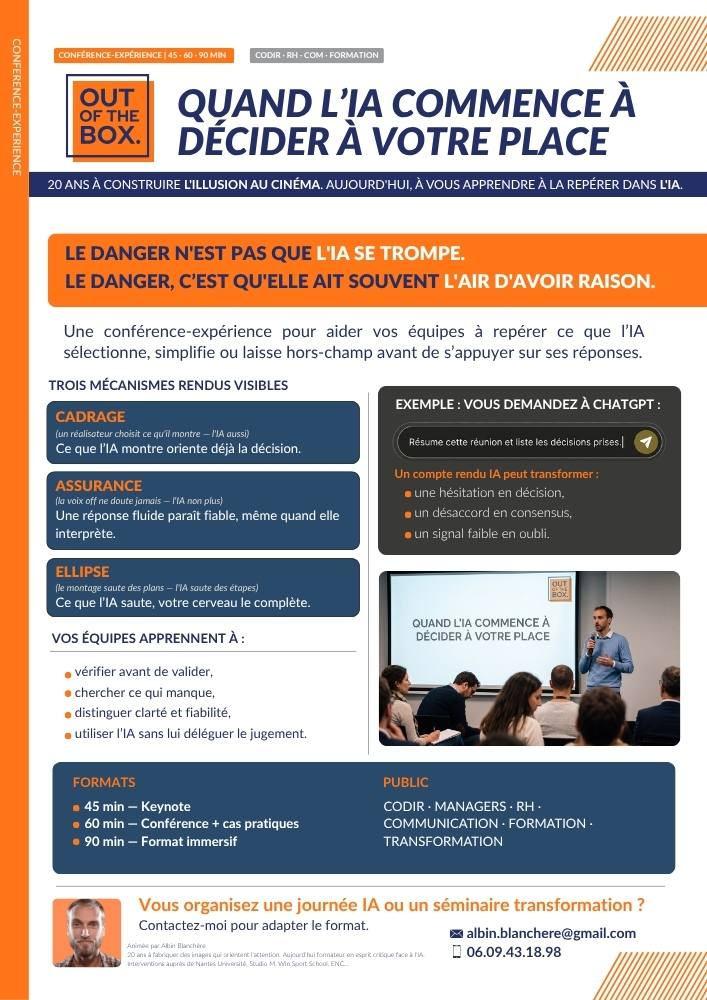
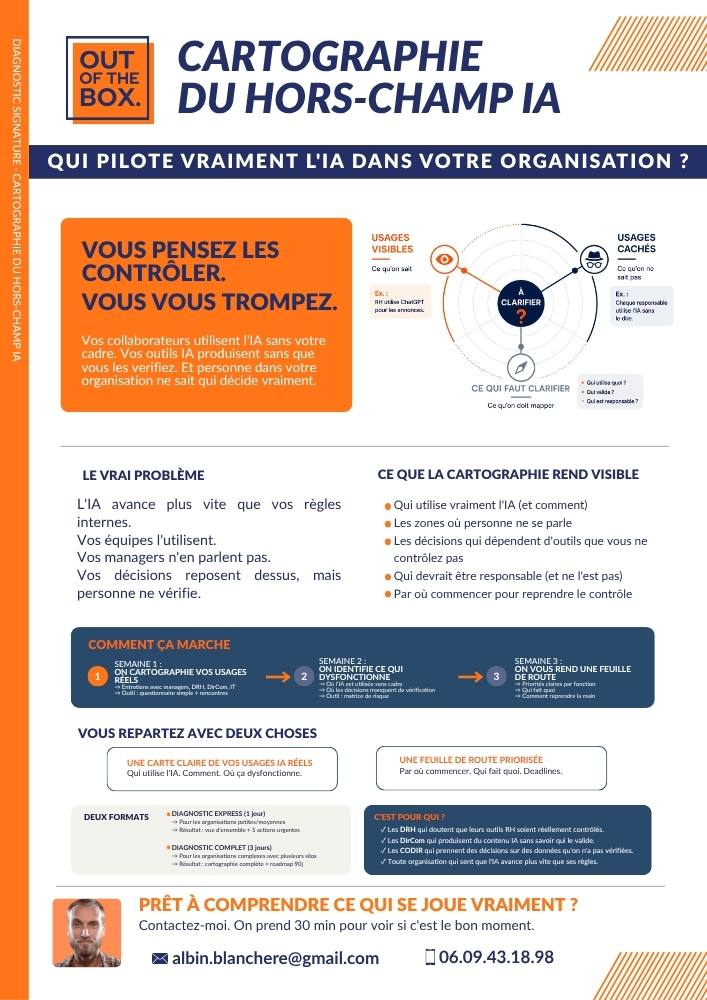
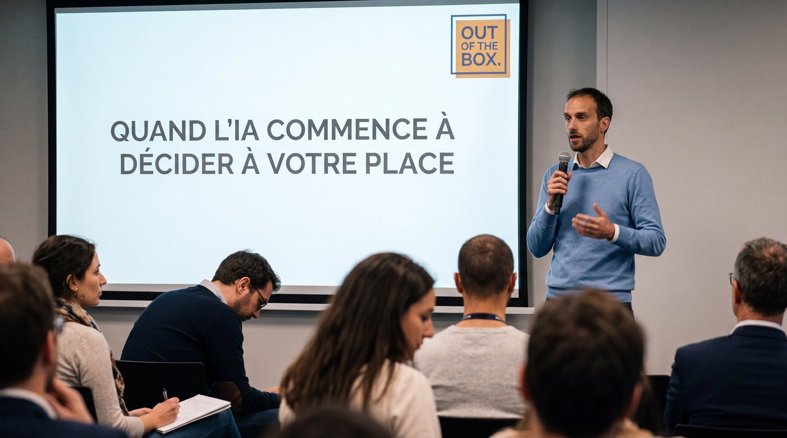

L'IA répond. Vous décidez encore ?
J'aide les directions et les équipes à comprendre comment l'IA est réellement utilisée, à repérer ce qui échappe à la vérification et à poser des règles simples.
Pour les directions, RH, communication, managers et responsables transformation.
20 ans de réalisation audiovisuelle appliqués à l'analyse critique des usages de l'IA.
Cas concret
Le compte rendu de réunion
Lundi matin, un comité projet doit décider s'il peut maintenir la date de lancement.
« Si on veut tenir le calendrier, il faut lancer lundi. »
« Je peux suivre, mais pas tant que les tests de sécurité ne sont pas terminés. »
« D'accord. On avance, sous réserve de leur validation vendredi. »
Décision prise
- Le lancement est confirmé pour lundi.
- L'équipe technique finalisera les derniers ajustements avant le démarrage.
- La communication peut préparer l'annonce du lancement.
Le lendemain, le compte rendu est envoyé aux équipes. Comme il est clair, court et crédible, personne ne revient à la transcription complète.
La décision sous condition devient progressivement une décision acquise.
L'IA n'a pas inventé la décision. Elle a retiré ce qui la rendait conditionnelle.
Sur le terrain
Vous avez peut-être déjà entendu ça chez vous.
Ces situations ne demandent pas toutes la même réponse. Le premier enjeu consiste à comprendre ce qui se passe réellement.
Parcours
Par où commencer ?
Quatre façons d'avancer, selon votre situation.
Mettre le sujet sur la table

Télécharger la plaquetteUne conférence pour donner des repères communs et ouvrir la discussion sans dramatiser.
45 à 90 min · CODIR, séminaires et équipesUn langage commun pour commencer à parler des usages réels.
Voir ce qui se passe vraiment

Télécharger la plaquetteUn diagnostic pour repérer les usages, les documents concernés et les situations où personne ne sait clairement qui vérifie.
Recueil des usages · Analyse · RestitutionUne vision claire des usages visibles, informels et prioritaires.
Apprendre à mieux vérifier
Un workshop construit à partir de situations proches des métiers pour développer des réflexes directement réutilisables.
Demi-journée ou journée · Cas métiersDes équipes plus autonomes face aux contenus produits avec l'IA.
Poser un cadre commun
Un accompagnement pour clarifier les règles, les responsabilités et les décisions qui doivent rester sous responsabilité humaine.
Format sur mesure · Directions et équipesDes règles compréhensibles et applicables dans le travail quotidien.
Méthode
La méthode Hors-Champ
Une méthode simple pour comprendre ce qui se passe avant de décider des règles.
Repérer les outils utilisés, les documents concernés et les moments où l'IA intervient déjà dans le travail.
Une vision claire des usages réels.
Vérifier les sources, les éléments laissés de côté et la manière dont les résultats sont relus ou validés.
Des points de vigilance concrets.
Définir des règles simples : ce qui peut être fait avec l'IA, ce qui doit être vérifié et qui prend la décision finale.
Des pratiques plus claires et applicables.
Vous repartez avec une vision des usages, des risques prioritaires et des actions à mettre en place.
Preuves
Ce qu'ils retiennent de mes interventions.
Nicolas Martin — Directeur Campus Eduservices NantesIl ne se limite pas aux outils, mais intègre pleinement les enjeux d'éthique et d'IA responsable dans ses enseignements. Une vraie valeur ajoutée pour les apprenants.
Arnaud Bénureau — Responsable pédagogique Mastère Design, ECV NantesLes étudiants ont, tout simplement et de façon unanime, adoré ces deux jours. Tant sur le fond que sur la forme. Albin est à la fois force de propositions et à l'écoute.
Denis Zorgniotti — Responsable pédagogique, Studio M NantesIl amène aux étudiants une expertise métier en phase avec les demandes actuelles du marché, tout en questionnant la problématique du sens.
Justine Pelletreau — Responsable relation client, ARTES FormationsLa méthode est claire et efficace et permet la démystification de cette grande machine qu'est l'IA.
Charlotte Niort — Responsable pédagogiqueSa pédagogie est dynamique et pousse l'apprenant à l'auto-réflexion. Son expertise est appréciée.

Réalisateur | Formateur | Esprit critique | IA
Albin Blanchère
Réalisateur. Formateur. Esprit critique.
Réalisateur et formateur depuis vingt ans, j'accompagne aujourd'hui les organisations qui cherchent à intégrer l'IA sans perdre leur capacité de jugement.
J'interviens auprès des dirigeants et des équipes pour rendre visibles les mécanismes qui influencent leurs contenus, leurs pratiques et leurs décisions.
Mon objectif : leur transmettre des repères qu'ils pourront utiliser sans moi.
Pourquoi le cinéma ?
Ce que le cinéma fait à l'image,
l'IA le fait au langage.
Depuis plus d'un siècle, le cinéma perfectionne une grammaire de l'influence : cadrage, montage, rythme, point de vue et hors-champ.
Les LLM automatisent aujourd'hui des opérations comparables dans le langage. Ils sélectionnent, hiérarchisent, simplifient et écartent des informations pour construire une réponse cohérente.
Mon travail consiste à rendre cette fabrication visible, afin que les équipes puissent encore interpréter, vérifier et décider.
FAQ
Questions fréquentes
Non. L'objectif n'est pas de freiner les usages, mais de mieux comprendre ce que l'on confie à l'IA, ce qu'elle transforme et ce qui doit rester vérifié par une personne.
Il ne s'agit pas de choisir entre tout accepter et tout refuser, mais de construire des usages plus maîtrisés.
Parce que le cinéma permet de comprendre très concrètement comment un récit oriente notre perception.
Un cadrage sélectionne ce que l'on voit. Un montage rapproche certains éléments et en écarte d'autres. Le hors-champ contient parfois une partie essentielle de la situation.
L'IA ne fonctionne pas comme un film, mais ses réponses posent des questions comparables : qu'a-t-elle sélectionné, simplifié ou laissé de côté pour produire un résultat aussi cohérent ?
Le cinéma devient ainsi un support accessible pour apprendre à regarder une production générée avec davantage de recul.
Oui. L'impact environnemental de ces outils fait partie des sujets abordés au fil des interventions.
Nous pouvons notamment questionner la consommation de ressources, la multiplication des usages, le choix des outils et la pertinence de certaines automatisations.
Ces enjeux ne sont pas séparés des autres : ils s'ajoutent aux questions juridiques, éthiques, sociales et professionnelles liées à l'utilisation de l'IA.
L'objectif n'est pas de culpabiliser les utilisateurs, mais de les aider à faire des choix plus conscients et proportionnés à leurs besoins.
Non. Une conférence peut permettre d'ouvrir le sujet avant même que des règles ou des outils aient été choisis.
La cartographie et les ateliers sont particulièrement utiles lorsque des usages existent déjà, même s'ils sont encore informels ou mal identifiés.
Oui. Les exemples, les exercices et les situations étudiées sont préparés en fonction de vos métiers, de vos documents et des usages réellement rencontrés par vos équipes.
L'objectif est d'éviter les démonstrations générales qui restent sans effet une fois les participants revenus à leur poste de travail.
Contact
Commençons par faire le point.
Un échange de vingt minutes suffit pour comprendre votre situation et identifier le format le plus utile.
Ou écrire directement à albin.blanchere@ootbox.info